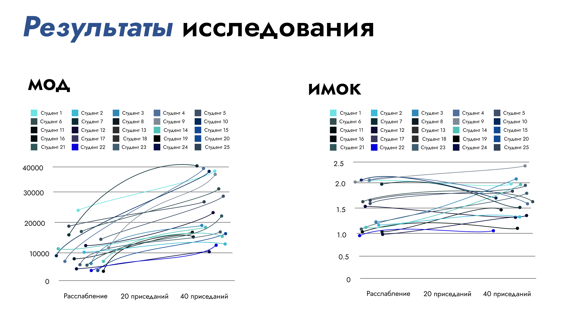
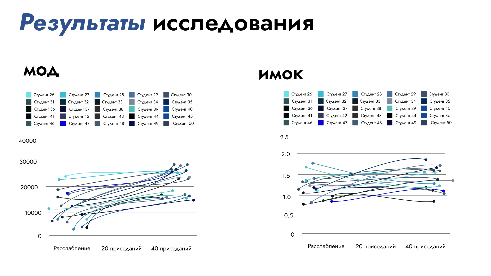
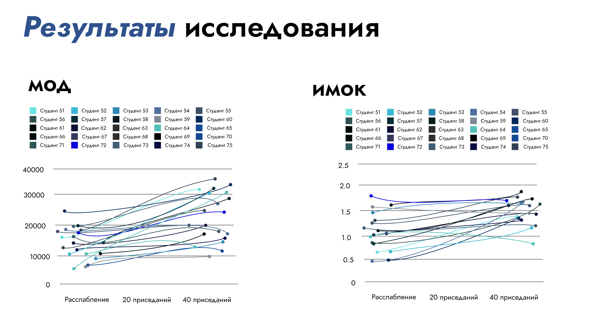
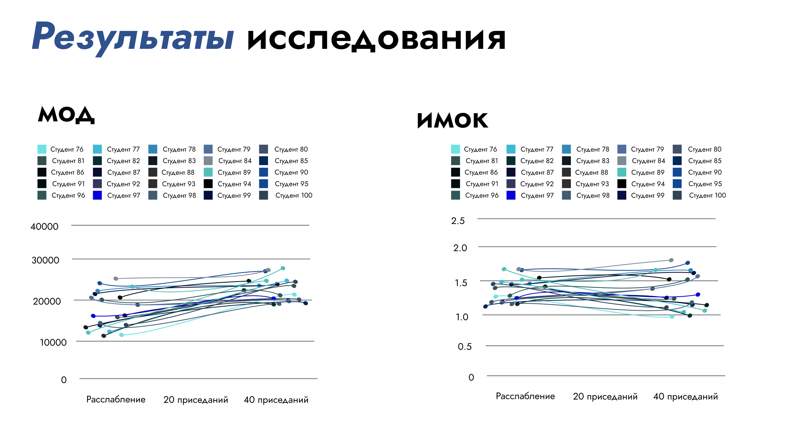
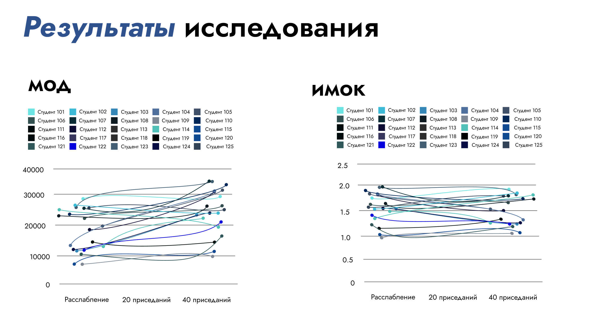

Сердечно-сосудистая система (ССС) является одной из ключевых систем организма, обеспечивающей кровоснабжение всех органов и тканей. Ее функциональное состояние напрямую влияет на общее здоровье человека, а нарушения в работе ССС могут привести к серьезным заболеваниям, таким как ишемическая болезнь сердца, гипертония, инфаркты и инсульты. По данным Всемирной организации здравоохранения (ВОЗ), сердечно-сосудистые заболевания (ССЗ) остаются основной причиной смертности во всем мире, составляя около 30% всех случаев смерти. Это делает актуальным поиск эффективных методов диагностики, профилактики и лечения ССЗ.
Одним из перспективных направлений в оценке функционального состояния сердечно-сосудистой системы является использование специфических нагрузочных тестов. Эти тесты позволяют не только оценить текущее состояние ССС, но и выявить скрытые функциональные нарушения, которые могут не проявляться в условиях покоя. В отличие от стандартных клинических методов, таких как измерение артериального давления или электрокардиограмма в состоянии покоя, нагрузочные тесты дают возможность оценить, как сердечно-сосудистая система реагирует на физическую активность. Это особенно важно для раннего выявления патологий, которые могут быть не замечены при обычном осмотре.
Целью данной статьи является анализ современных методов оценки функционального состояния сердечно-сосудистой системы при помощи специфических нагрузок, а также разработка рекомендаций по их оптимизации. В рамках исследования рассматриваются различные методики нагрузочных тестов, их эффективность и влияние на показатели ССС, такие как частота сердечных сокращений (ЧСС), артериальное давление и минутный объем дыхания (МОД). Особое внимание уделяется индивидуальным характеристикам, которые могут существенно влиять на результаты тестирования.
Практическая значимость данного исследования заключается в возможности применения полученных данных для разработки индивидуализированных программ физической активности, как для здоровых людей, так и для пациентов с сердечно-сосудистыми заболеваниями. Кроме того, результаты могут быть использованы в образовательных целях для обучения медицинских работников и студентов, что способствует повышению квалификации специалистов в области кардиологии и спортивной медицины.
В заключение, проведенный анализ позволит не только улучшить понимание адаптационных механизмов сердечно-сосудистой системы, но и предложить новые подходы к диагностике и профилактике ССЗ. Это имеет важное значение для повышения качества жизни и здоровья населения, особенно в условиях современного образа жизни, характеризующегося снижением физической активности и увеличением стрессовых нагрузок.
Минутный объем дыхания (МОД) --- это количество воздуха, которое человек вдыхает и выдыхает за одну минуту. Этот показатель является важным параметром для оценки функционального состояния дыхательной системы и ее способности обеспечивать организм кислородом. МОД зависит от частоты дыхания и объема каждого вдоха (дыхательный объем). При физической нагрузке МОД увеличивается, так как организм требует больше кислорода для поддержания работы мышц и других органов. В условиях покоя МОД у здорового человека составляет около 6-8 литров в минуту, но при интенсивной нагрузке может возрастать до 50-100 литров в минуту и более.
Индекс минутного объема кровообращения (ИМОК) --- это показатель, который отражает объем крови, перекачиваемой сердцем за одну минуту. ИМОК является важным параметром для оценки функционального состояния сердечно-сосудистой системы. Он зависит от частоты сердечных сокращений (ЧСС) и ударного объема (количество крови, выбрасываемой сердцем за одно сокращение). В состоянии покоя ИМОК у взрослого человека составляет около 5-6 литров в минуту, но при физической нагрузке может увеличиваться в несколько раз, достигая 20-30 литров в минуту у тренированных спортсменов.
Оба показателя — МОД и ИМОК — тесно связаны между собой, так как сердечно-сосудистая и дыхательная системы работают в тесной взаимосвязи для обеспечения организма кислородом и удаления углекислого газа. При увеличении физической нагрузки происходит синхронное увеличение как МОД, так и ИМОК, что позволяет организму адаптироваться к повышенным требованиям.
В рамках проведенного исследования были проанализированы данные 125 студентов, у которых замерялся МОД, а после ИМОК(по формуле), в трех состояниях: в состоянии покоя, нагрузка равная 20 приседаниям за минуту и 40 приседаниям за минуту. Целью исследования было оценить изменения МОД и ИМОК в зависимости от уровня физической нагрузки, а также посмотреть, как адаптируется ССС у разных людей, при таких специфических нагрузках. Данные были разделены на пять групп, каждая из которых включала 25 студентов.
    Минутный объем дыхания (МОД):
В состоянии покоя средний МОД у студентов составлял около 7-10 литров в минуту, что соответствует нормальным значениям для здорового человека. Это указывает на то, что в условиях покоя дыхательная система работает в оптимальном режиме, обеспечивая организм необходимым количеством кислорода.
После выполнения 20 приседаний МОД увеличивался в среднем до 10-20 литров в минуту. Это свидетельствует об активации дыхательной системы, которая начинает работать более интенсивно для обеспечения организма кислородом. Увеличение МОД связано с тем, что мышцы ног и других частей тела требуют больше кислорода для выполнения работы.
После 40 приседаний МОД достигал значений 25-30 литров в минуту. Это подтверждает, что при более интенсивной нагрузке потребность организма в кислороде значительно возрастает. Дыхательная система адаптируется к этим требованиям, увеличивая частоту и глубину дыхания.
В состоянии покоя средний ИМОК у студентов составлял около 1.0-1.5 единиц, что также соответствует норме. Это указывает на то, что сердечно-сосудистая система в состоянии покоя работает в оптимальном режиме, обеспечивая достаточный приток крови к органам и тканям.
После 20 приседаний ИМОК увеличивался до 1.5-2.0 единиц. Это свидетельствует о том, что сердечно-сосудистая система активизируется для обеспечения работающих мышц кислородом. Увеличение ИМОК связано с повышением частоты сердечных сокращений и ударного объема.
После 40 приседаний ИМОК достигал значений ближе к 2.0 единиц. Это указывает на значительную нагрузку на сердечно-сосудистую систему, которая вынуждена работать более интенсивно для удовлетворения потребностей организма в кислороде.
Рассмотрим самые интересные случаи: Студент 22, 1, 7, 24, 59
Студент номер 22: на примере Студента №22 можно увидеть, не значительное повышение значения МОД. Это может быть связано с его исключительно хорошей физической подготовкой, также это подтверждается значением ИМОК= 1.0. Из этого можно сделать вывод, что его ССС не нуждается в адаптации к такого вида нагрузкам, чтобы не тратить лишние ресурсы.
Студент номер 24: аналогичный пример хорошей физической подготовки, т. к. его значения не далеко ушли от Студента №22. При этом ИМОК Студента №24 выше, чем у Студента №22, это нам говорит о разном строении его тела, и скорее всего Студент №24 выше, чем Студент №22, т. к. требуется больше крови, которая циркулирует по его телу.
Студент номер 7: значения МОД и ИМОК Студента №7 самые высокие из всех Студентов, принимавших участие. Такие высокие показатели связаны, по большей степени с астматическим заболеванием, т. к. организму, в частности ССС Студента №7 требуется большое количество кислорода для адаптации к нагрузкам такого характера.
Студент номер 1: имеет значения примерно равные Студенту №7, это говорит о их различии, как в физическом плане, так и на генетическом уровне. МОД Студента №1 стремительно растет по мере увеличения количества нагрузки, это говорит о том, что ССС Студента №1 активно адаптируется к специфическим нагрузкам.
Студент номер 59: по показателям Студента №59 можно сказать, что не всегда увеличения количества нагрузки будет увеличивать значение МОД, т. е. ССС Студента №59 было достаточно адаптироваться к 20 приседаниям, при увеличении до 40 разница между показателями незначительна. Можно сказать, что ССС Студента №59 разницы между количеством приседаний Студент №59 не чувствует, что говорит нам о быстрой и отличной адаптации к нагрузкам.
Проведенное исследование показало, что физические нагрузки, такие как приседания, приводят к значительному увеличению как МОД, так и ИМОК. Это подтверждает, что сердечно-сосудистая и дыхательная системы активно адаптируются к повышенным требованиям, обеспечивая организм необходимым количеством кислорода и удаляя продукты метаболизма.
Результаты также свидетельствуют о том, что даже простые физические нагрузки, такие как приседания, могут быть эффективным методом оценки функционального состояния сердечно-сосудистой и дыхательной систем. Это особенно важно для раннего выявления скрытых нарушений, которые могут не проявляться в состоянии покоя. Например, у некоторых студентов наблюдалось незначительное увеличение МОД и ИМОК при выполнении 20 приседаний, что может указывать на хорошую физическую подготовку испытуемого, так как ССС не тратит большое количество ресурсов, из этого следует, что такая нагрузка не оказывает серьезное давление на организм испытуемого. Это показывает, что его ССС не нуждается в адаптации к такого рода нагрузкам. Такой результат считается крайне положительным.
Кроме того, данные исследования могут быть использованы для разработки индивидуализированных программ физической активности, как для здоровых людей, так и для пациентов с сердечно-сосудистыми заболеваниями. Регулярное проведение подобных тестов позволит отслеживать динамику изменений в состоянии сердечно-сосудистой системы и корректировать тренировочные программы в зависимости от индивидуальных особенностей человека.
Проведенное исследование, направленное на оценку функционального состояния сердечно-сосудистой системы (ССС) при помощи специфических нагрузок, таких как приседания, позволило получить важные данные о реакции организма на физическую активность. Анализ показателей минутного объема дыхания (МОД) и индекса минутного объема кровообращения (ИМОК) у 100 студентов в трех состояниях (покой, 20 приседаний и 40 приседаний) показал, что даже простые физические нагрузки могут служить эффективным инструментом для оценки адаптационных возможностей сердечно-сосудистой и дыхательной систем.
Увеличение МОД и ИМОК при выполнении приседаний свидетельствует о том, что организм активно адаптируется к физической нагрузке. В состоянии покоя средний МОД составлял 7-10 литров в минуту, а после 40 приседаний он увеличивался до 25-30 литров в минуту. Это подтверждает, что дыхательная система способна значительно увеличивать объем потребляемого кислорода для удовлетворения потребностей работающих мышц.
Аналогично, ИМОК увеличивался с 1.0-1.5 единиц в состоянии покоя до 2.0 единиц после 40 приседаний, что указывает на активацию сердечно-сосудистой системы для обеспечения организма кислородом. Это явление, известное как кардиореспираторная адаптация, играет ключевую роль в поддержании гомеостаза при физической активности.
Исследование выявило значительные индивидуальные различия в реакции на нагрузку. Например, у студентов с хорошей физической подготовкой (Студент №22 и Студент №24) наблюдалось незначительное увеличение МОД и ИМОК, что свидетельствует о высокой эффективности их сердечно-сосудистой системы и отсутствии необходимости в значительной адаптации к таким нагрузкам.
В то же время у студентов с возможными скрытыми нарушениями (Студент №7 и Студент №1) наблюдалось значительное увеличение МОД и ИМОК, что может указывать на повышенную потребность в кислороде из-за особенностей физического состояния или наличия заболеваний, таких как астма.
Результаты исследования подтвердили, что даже такие простые нагрузки, как приседания, могут быть эффективным методом оценки функционального состояния ССС. Это особенно важно для раннего выявления скрытых нарушений, которые могут не проявляться в состоянии покоя. Например, у некоторых студентов наблюдалось незначительное увеличение МОД и ИМОК при выполнении 20 приседаний, что может указывать на хорошую физическую подготовку и высокие резервные возможности их организма.
Полученные данные могут быть использованы для разработки индивидуализированных программ физической активности, как для здоровых людей, так и для пациентов с сердечно-сосудистыми заболеваниями. Регулярное проведение подобных тестов позволит отслеживать динамику изменений в состоянии сердечно-сосудистой системы и корректировать тренировочные программы в зависимости от индивидуальных особенностей человека.
Кроме того, результаты исследования могут быть полезны для образовательных целей, например, для обучения медицинских работников и студентов, что способствует повышению квалификации специалистов в области кардиологии и спортивной медицины.
В будущем исследования могут быть направлены на разработку более точных и индивидуализированных методов оценки функционального состояния ССС с учетом таких факторов, как возраст, пол, уровень физической подготовки и генетическая предрасположенность. Это позволит создавать более эффективные программы тренировок и реабилитации для различных групп населения.
Внедрение современных технологий, таких как wearable-устройства (умные часы, фитнес-трекеры) и мобильные приложения, может упростить процесс мониторинга состояния сердечно-сосудистой системы в повседневной жизни. Это позволит людям самостоятельно отслеживать свои показатели и своевременно корректировать уровень физической активности.
Дальнейшие исследования могут быть направлены на изучение долгосрочных эффектов регулярных физических нагрузок на состояние сердечно-сосудистой системы. Это поможет лучше понять, как различные виды активности влияют на здоровье сердца и сосудов в долгосрочной перспективе.
Таким образом, проведенное исследование подтвердило, что специфические нагрузочные тесты, такие как приседания, являются эффективным методом оценки функционального состояния сердечно-сосудистой системы. Они позволяют не только оценить текущее состояние организма, но и выявить скрытые нарушения, которые могут быть не замечены при стандартном клиническом обследовании. Результаты исследования подчеркивают важность регулярной оценки функционального состояния ССС, особенно в условиях современного образа жизни, характеризующегося снижением физической активности и увеличением стрессовых нагрузок.
Использование таких тестов в клинической практике и спортивной медицине может способствовать раннему выявлению сердечно-сосудистых заболеваний, улучшению качества жизни пациентов и повышению эффективности тренировочного процесса у спортсменов. В конечном итоге, это имеет важное значение для снижения уровня смертности от сердечно-сосудистых заболеваний и улучшения общего состояния здоровья населения.